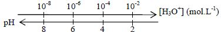
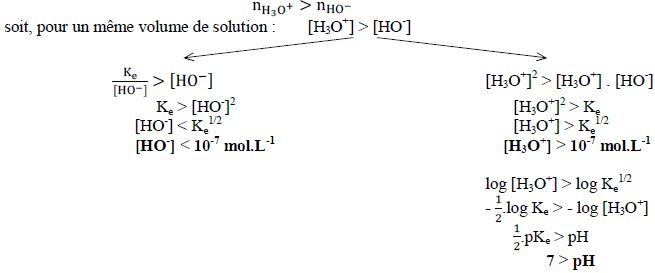
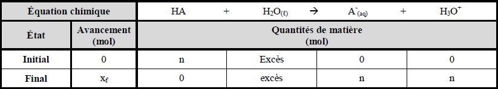

I- Les solutions aqueuses acido-basiques
1°) La mesure du pH
- Le pH (potentiel d’hydrogène) est une grandeur physique sans unité indiquant le caractère acide, neutre ou
basique d’une solution.
- Plusieurs techniques existent pour mesurer le pH d’une solution :
- Le papier-pH permet d’évaluer la valeur du pH à 1 unité près voire au dixième
d’unité près pour des papiers très ciblés : le dépôt d’une goutte de solution sur
le papier et la comparaison de la couleur obtenue avec une échelle de teintes
fournie par le constructeur permet la mesure ;
- Le pH-mètre la valeur du pH au dixième d’unité près voire au centième d’unité près : tremper une
sonde pH-métrique dans une solution permet l’affichage de la valeur sur l’écran du pH-mètre
préétalonné.
2°) Définition du pH
- Le pH est lié à la concentration en ions hydronium (ou oxonium) H3O+ :
pH = -log [H3O+] ou [H3O+] = 10^-pH
- Le pH et la concentration en ions oxonium [H3O+] évoluent en sens inverse : plus la concentration [H3O+] est
élevée, plus le pH est faible.

3°) L’eau pure : un mythe
a) La réaction d’autoprotolyse de l’eau
L’eau « pure » contient toujours des ions oxonium H3O+ et hydroxyde HO-
(aq) à une concentration égale à
10-7 mol.L-1. Ces ions proviennent d’une réaction entre les molécules d’eau appelée « autoprotolyse de l’eau »,
correspondant à une réaction de transfert de proton d’une molécule d’eau à une autre selon l’équation :
2 H2O(ℓ) ↔ H3O+ + HO- (aq)
Rq. : Cette réaction n’est pas totale mais limitée car elle a lieu dans les deux sens.
b) Le produit ionique de l’eau
L’expérience montre que pour une solution acide comme pour une solution basique, quelle que soit la
valeur du pH, le produit des concentrations est constant : [H3O+] × [HO-] = Ke
Où Ke = 1,0.10-14 à une température de 25 °C
Rq. : Une constante pKe est définie en fonction du Ke : pKe = - log Ke (pKe = 14 à 25 °C)
c) Les domaines acide, neutre et basique
- Une solution aqueuse est acide si la quantité d’ions oxonium est supérieure à celle d’ions hydroxyde :

- Une solution aqueuse est neutre si les quantités d’ions oxonium et hydroxyde sont égales :
n(H3O+) = n(HO-) soit [H3O+] = [HO-] pour un même volume de solution
Or Ke = [H3O+] × [HO-] soit Ke = [H3O+]2 soit [H3O+] = √(Ke) = 10-7 mol.L-1 = [HO-]
Or par définition : pH = - log [H3O+] donc pH = 7
- Une solution aqueuse est basique si la quantité en ions oxonium est inférieure à celle en ions hydroxyde :
n(H3O=) < n(HO-) soit [H3O+] < [HO-]
Donc [HO-] > 10-7 mol.L-1 et [H3O+] < 10-7 mol.L-1
Donc pH > (1/2) pKe soit pH > 7
II- La théorie de Brönsted
1°) Les acides et les bases
- Un acide est une entité chimique susceptible de perdre un ou plusieurs proton(s) H+.
Exemples :
- l’acide éthanoïque : CH3COOH(aq) = CH3COO- (aq) + H+
- l’acide sulfurique : H2SO4 (ℓ) = (SO4)2- (aq) + 2 H+
- Une base est une entité chimique susceptible de capter un (ou plusieurs) proton(s) H+.
- l’ammoniaque : NH3(aq) + H+ = NH4+(aq)
- l’ion carbonate : (CO3)2-(aq) + 2 H+ = CO2, H2O
2°) Notion de couple acide - base
- Deux espèces chimiques qui, au cours d’une réaction, se transforment l’un en l’autre par gain ou perte de
proton H+ sont dites « espèces conjuguées » et forment un couple acide/base AH / A-.
- La demi-équation reliant l’acide et la base est appelée demie équation acido-basique : AH = A- + H+
Exemples : Réaction entre l’acide éthanoïque et l’ammoniaque :

III- Force des acides et des bases
1°) Mise en évidence expérimentale
a) Expérience
- Mesurons le pH d’une solution d’acide chlorhydrique de concentration c = 1,0.10-2 mol.L-1 : pHAC ≈ 2,1
- Mesurons le pH d’une solution d’acide éthanoïque de même concentration : pHAE ≈ 3,0,
b) Interprétation
- Acide chlorhydrique :
- La quantité de chlorure d’hydrogène nécessaire pour préparer la solution est : nHCℓ = c × V
A.N. : nHCℓ =1,0.10-2 × 1,0 = 1,0.10-2 mol
- La quantité d’ions oxonium présents dans la solution est :
n(H3O+)ac = [H3O+]ac × V
soit n(H3O+)ac = 10^-pH(ac) × V ,
- L’équation de formation des ions oxonium s’écrit : HCℓ(g) + H2O(ℓ) H3O+ + Cℓ- (aq)
D’après cette équation : (nHCℓ)f = n(H3O+)f
- Conclusion : Aux incertitudes de mesure près, nous avons montré que la totalité des réactifs
utilisés avaient été consommés.
- Acide éthanoïque :
- La quantité d’acide éthanoïque nécessaire pour préparer la solution est : nAE = c × V
A.N. : nAE =1,0.10^^-2 × 1,0 = 1,0.10-2 mol
- La quantité d’ions oxonium présents dans la solution est :
n(H3O+)ae = [H3O+]ae × V soit n(H3O+)ae = 10^-pH(ae) × V
A.N. : n(H3O+)ae =10-3,0 × 1,0 = 1,0.10-3 mol
- L’équation de formation des ions oxonium s’écrit : CH3COOH(ℓ) + H2O(ℓ) H3O+ + CH3COO- (aq)
D’après cette équation : n(CH3COOH) = n(H3O+)f
- Conclusion : Même en tenant compte des incertitudes expérimentales, l’expérience montre que
la relation précédente n’est pas vérifiée, mais que n(H3O+)f < n(CH3COOH)f
Les molécules d’acide éthanoïque n’ont pas réagi totalement avec l’eau.
- Bilan : Puisque le chlorure d’hydrogène HCℓ a réagi en plus grande quantité que l’acide éthanoïque
CH3COOH, ce dernier est un acide moins fort (ou plus faible) que le chlorure d’hydrogène.
c) Notion de réactions totale ou limitée
- Lorsque le réactif limitant est entièrement consommé à l’état final, la réaction est qualifiée de totale et le
symbole utilisé est une flèche simple (→) : HCℓ(g) + H2O(ℓ) → H3O+ + Cℓ-(aq)
- Lorsque le réactif limitant est encore présent à l’état final, la réaction est qualifiée de partielle ou limitée
et le symbole utilisé est une flèche double (↔) : CH3COOH(ℓ) + H2O(ℓ) ↔ H3O+ + CH3COO- (aq)
2°) Les acides forts et les bases fortes
a) Définitions
- Un acide AH est qualifié de fort si sa réaction avec l’eau est quasi-totale quelle que soit la concentration
initiale en acide.
Son équation de mise en solution dans l’eau s’écrit alors : HA + H2O(ℓ) → H3O+ + A- (aq)
- Une base B est qualifiée de forte si sa réaction avec l’eau est quasi-totale quelle que soit la concentration initiale en base.
Son équation de mise en solution dans l’eau s’écrit alors : B + H2O(ℓ) → BH+ (aq) + HO- (aq)
b) Le pH d’une solution d’acide fort
- Dressons le tableau d’avancement de la réaction de mise en solution d’un acide fort dans l’eau :

Puisque la réaction est totale, HA s’épuise : (nHA)f = 0 soit n - xf = 0 soit xf = n
- La concentration en ions oxonium est : [H3O+] = n/V
La « concentration de la solution » est : c = n/V donc [H3O+] = c
- Le pH d’une solution d’acide fort de concentration molaire c peut alors être défini par : pH = - log c